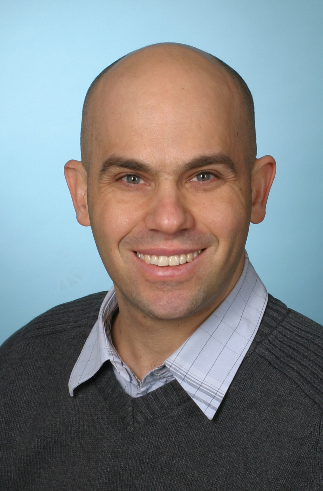

About me
|
PhD. in mathematics from the Freie Universität Berlin (FU Berlin). The title of the dissertation is: |
 |
Fields of interest
The following is a partial list of topics and issues which I find interesting:- Computational Geometry: For example, sampling surfaces and hypersurfaces.
- Differential and Riemannian Geometry: In particular, using intrinsic properties of manifolds in order to sample them. One example of such property is convexity of subsets of manifolds.
- Visualization and Typesetting